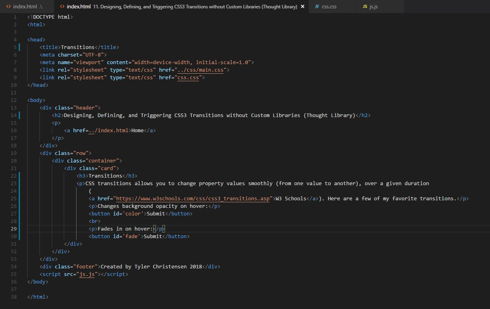

CSS transitions allows you to change property values smoothly (from one value to another), over a given duration (W3 Schools). Here are a few of my favorite transitions.
Changes background (and text) color on hover (ease):
Fades in on hover (linear):
Grows on hover, shrinks on click: